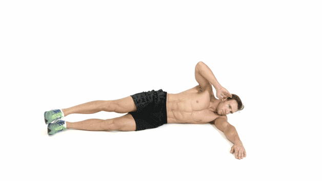
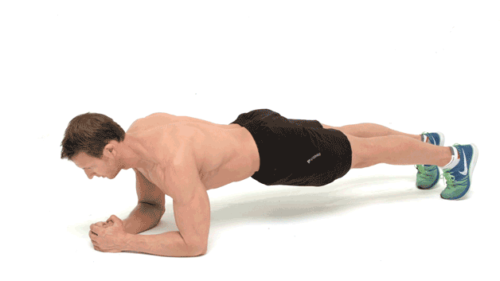
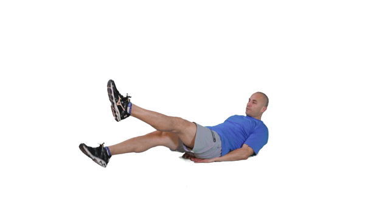

Leg Raises
- Leg raises are a great exercise that targets your lower abs and helps strengthen the ligaments between your hips and abs creating the 'V-Cut' effect.
- An alternative for those more advanced is the hanging leg raise where you hang from a pull up bar and raise your legs in a similar fashion.
- Do 3-4 sets of 8-25+ depending on your level of fitness.

Side Jack-Knife.
- An alternative to the regular jack-knife, the side jack-knife targets the obliques directly.
- This exercise can be tricky to get right but remember to use your supporting leg to stabilize yourself.
- Focus on the contraction and remember to squeeze your obliques and not your lats.

Crunches
- Unlike the sit-up, crunches do not negatively impact the spine and can be performed safely by almost anyone.
- These target your abdominals directly with an emphasis on the upper region.

Plank
- The plank targets your core muscles isometrically creating a good balance with the other exercises in this workout.
- For those who find this too challenging you can drop down to your knees instead of your feet.

Flutter Kicks
- Sitting in a crunch position also allows you to activate your upper abs while doing this exercise.
- Flutter kicks are a great way to finish off your ab workout by burning out your core.